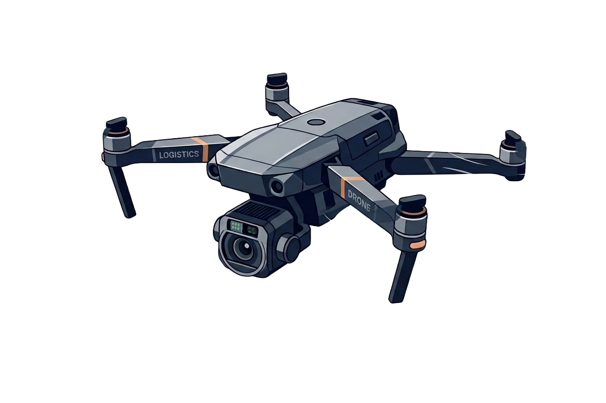
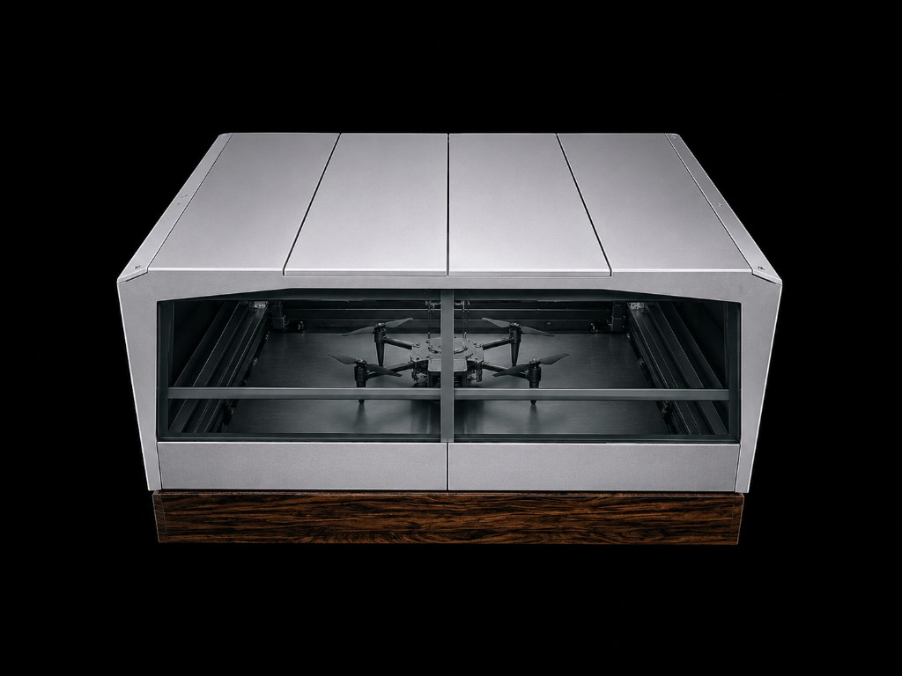
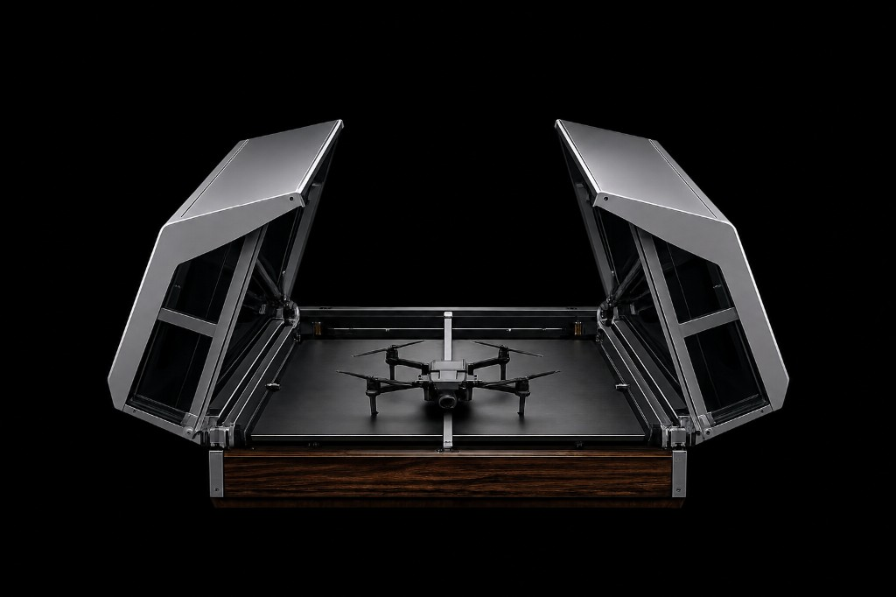

Eyes In
The Sky
XAerova enables laptop-based remote drone piloting from any location worldwide.

XAerova enables laptop-based remote drone piloting from any location worldwide.

XAerova exists to make physical security, patrol, and property oversight simple and affordable. We help homeowners and businesses monitor and protect the places that matter most, from homes and farms to construction sites and facilities. Our autonomous drone systems provide reliable remote presence even when owners cannot be there in person. By removing the cost and complexity of traditional security teams and enterprise drone systems, XAerova delivers peace of mind that anyone can use.
Skymind Dock is our solar-powered autonomous drone dock. Installed directly on the property you need to protect, it keeps your Skymind drone ready to launch around the clock—without grid power or daily manual setup. Combined with our remote flying capability, property owners can oversee their land, buildings, and perimeters from anywhere in the world, as if they were on site.


Agricultural land is often vast, remote, and impossible to watch in person every day. Skymind Dock brings always-ready aerial oversight directly to the farm—the solar-powered dock installed on your land, paired with remote flying so owners and operators can patrol fields, check livestock, and inspect infrastructure from anywhere in the world.
Because the dock runs on solar power, it fits naturally on remote farms and ranches with no grid connection. The drone stays charged and sheltered on your land, ready whenever you need eyes in the sky—whether you are in the farmhouse, the city, or halfway around the world.

Skymind is our remote flying drone platform, designed to strengthen security for communities and businesses. By providing reliable aerial oversight that can be piloted from anywhere, it helps protect property, deter incidents, and give peace of mind—contributing to a safer society for everyone.
Built for government ministries and public agencies—supporting agriculture, security and defense, and nature protection missions worldwide.
Ministry of Agriculture — field patrols, livestock oversight, and farm infrastructure monitoring across vast rural territories.
Ministry of Defense and public security agencies — persistent aerial presence for patrol, infrastructure protection, and rapid response.
Ministry of Water and Forests — safeguarding national parks, watersheds, and natural resources across protected territories.
Your message has been successfully submitted. Our team will contact you shortly.